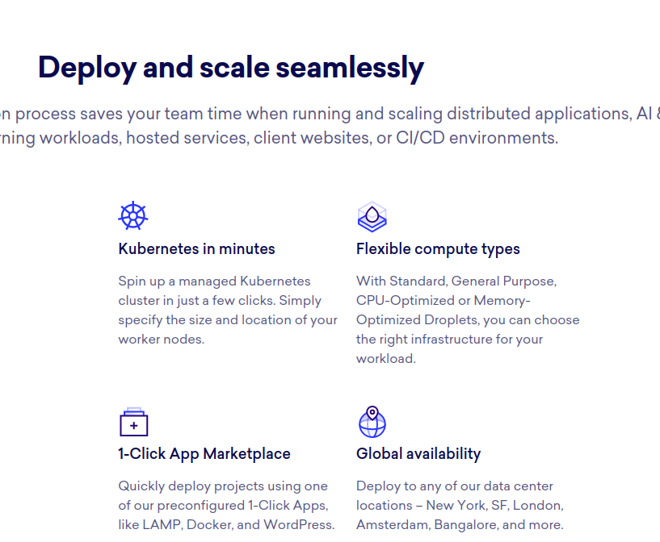
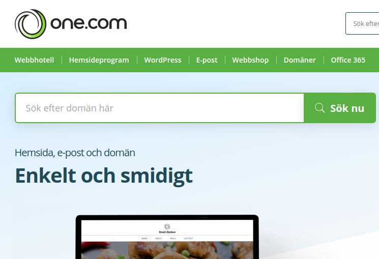
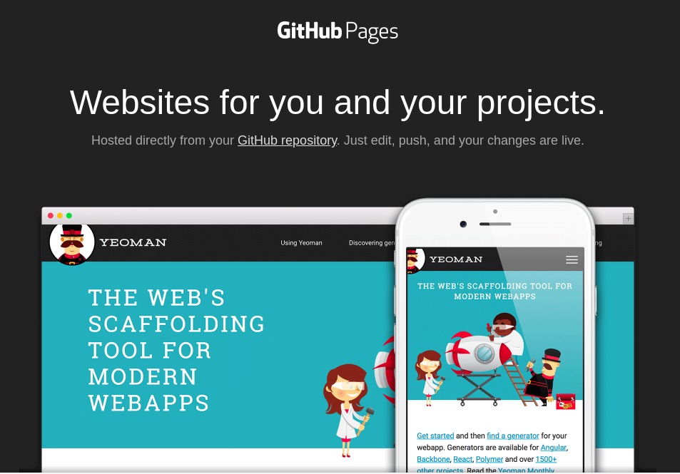

Fördelar
- Egen virtuell server. Oändligt konfigurerbart.
- Dynamiskt skalbar hårdvara.
- Betala bara för den data och trafik du använder.
- Automatisera arbetsflöde med Docker etc.
Nackdelar
- Brant inlärningskurva.

Ta mig dit!
Metod #2
One.com
Fördelar
- Billigt
- Ofta erbjuds tjänster som databas. Dock begränsad till deras förkonfigurerade mjukvara.
- Paketlösningar. T.ex inkluderad domän.
Nackdelar
- Fast mängd trafik och lagringsdata varje månad.
- Väldigt svårt att skala upp prestanda för att möta ökad trafik.
- Kan vara något klumpigt att publicera uppdateringar, jämfört med de andra alternativen.

Ta mig dit!
Metod #1
Github Pages
Fördelar
- Gratis.
- Enkelt att komma igång.
- Väldigt smidigt att publicera uppdateringar
Nackdelar
- Endast statiska webbsidor.
-
Behöver vara bekant med git för
att få ut det mesta av tjänsten.

Ta mig